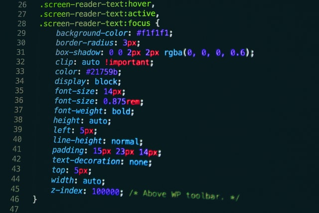

#1 - Sobre mim
Olá, me chamo Arthur, tenho 30 anos. Sou atualmente analista de logística, busca da transição de área e como da pra perceber ainda estou aprendendo.
Então, tenha um pouco de paciência.

Como já disse, trabalho no momento na área de logística a mais ou menos 6 anos. Porém logística não é a única área que tenho experiência.
Durante 8 anos da minha vida, dos 16 anos 24 anos, trabalhei com redes de computadores, mais precisamente em um provedor de internet,
onde eu com configuração de servidores, e até iniciei minha graduação em redes. Porém, decidi sai da área e acabei na logistica.
Que me deu um conhecimento analítico e experiência avançada em Excel, VBA e Power BI. Além da experiência em KPIs logísticos.
Maaaas, depois de bastante tempo "longe" do mundo profissional da tecnologia, decidi mudar mais uma vez! E na moral, ta sendo muito
gratificante, mesmo não tendo tanto conhecimento aprender como construir cada código desta página que você ta lendo. Mesmo sendo simples
é o que me deixa empolgado para continuar estudando e emm um futuro próximo, começar a trabalhar como Desenvolvedor.